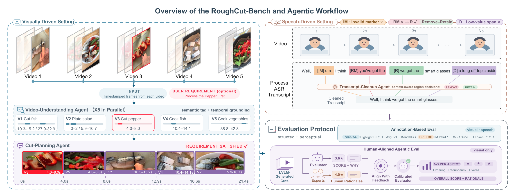
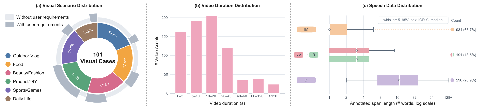

RoughCut-Bench
A Benchmark for Automatic Video Rough-Cut with Large Vision-Language Models
Overview
Evaluating executable rough-cut plans
Video rough-cut organizes raw media into an initial cut through highlight detection and selection, source-video ordering, and spoken-content refinement. RoughCut-Bench studies this compositional creation task through visually driven video cases and speech-driven ASR cases.
The benchmark combines annotation-based metrics with human-aligned assessment of rendered cuts. Proposed agentic workflows guide representative LVLMs to produce structured cut plans from the input materials.


Leaderboard
Performance across rough-cut dimensions
Click a metric header to rank models. No cross-setting aggregate is used.
Case Explorer
Inspect the inputs, references, and outputs
All public visual examples are muted and privacy reviewed.
Citation
Citation
Citation information will be added after publication.